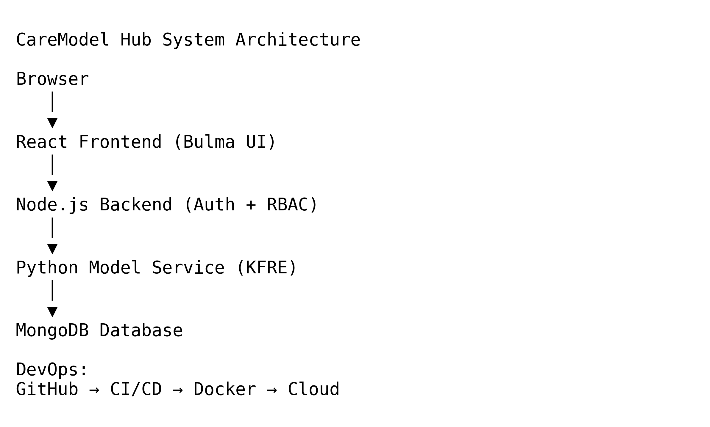

Project Poster

Name: Peter Chuk
Student Number: 2010887
Academic Year: 2024-2026
The CareModel Hub (CMH) is a modular clinical decision support platform designed to bridge the gap between validated medical algorithms and their practical use in healthcare. The platform uses a microservice architecture where a Node.js backend manages authentication and user roles while isolated Python services perform clinical calculations such as the Kidney Failure Risk Equation (KFRE). The system follows EU NIS2 cybersecurity principles and supports HL7 FHIR interoperability standards for integration with modern healthcare systems.
